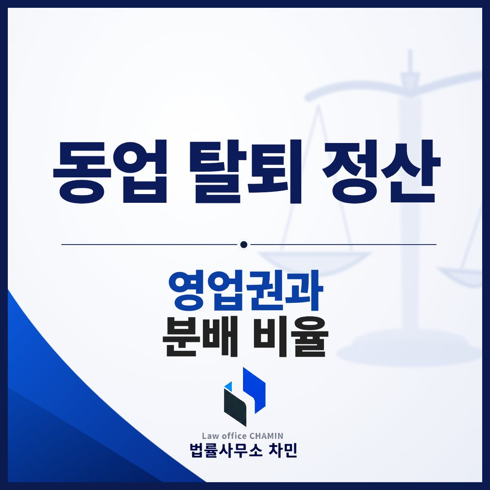

핵심 답변
정산을 청구하는 쪽이 남은 재산이 있다는 것을 증명해야 합니다. 나오기 전에 장부와 계좌, 세금 신고, 재고 자료를 확보해 두세요.
동업이 깨지면 남는 사람은 사업을 계속하고, 나가는 사람은 자기 몫을 돈으로 받아야 합니다. 이때 가장 흔한 다툼은 “정산할 재산이 없다”는 주장과, 얼마를 기준으로 나눌지입니다.

정산의 기본 공식
동업은 민법상 조합에 해당하는 경우가 많습니다. 탈퇴한 조합원과의 계산은 탈퇴 당시의 조합재산 상태를 기준으로 하고, 출자한 것이 물건이었더라도 금전으로 돌려받을 수 있습니다(민법 제719조). 계산은 대략 다음과 같습니다.
(적극재산 − 조합채무) × 분배 비율 = 정산금
탈퇴 당시 끝나지 않은 거래가 있다면 그 거래가 끝난 뒤 계산할 수 있습니다(같은 조 제3항).
“남는 게 없다”고 하면
남은 동업자가 조합재산이 없다고 주장하면, 정산을 청구하는 쪽이 재산이 있다는 것을 증명해야 합니다. 그래서 나오기 전에 장부, 계좌 거래 내역, 부가세·종합소득세 신고 자료, 재고 목록, 부동산이나 장비 관련 자료를 확보해 두는 것이 중요합니다. 챙기지 못했다면 소송 초기에 문서제출명령, 금융거래정보 제출명령, 감정, 사실조회를 신청해 자료를 확보합니다.
적극재산, 영업권을 놓치지 마세요
적극재산에는 계좌 잔액, 받을 매출채권, 재고, 장비, 부동산 같은 유형 자산이 들어갑니다. 놓치기 쉬운 것이 영업권입니다. 영업권은 좋은 입지, 운영 시스템, 단골 고객 등으로 같은 업종의 평균보다 더 많은 수익을 낼 수 있는 힘을 말하며, 매출과 수익 구조에 따라 상당한 금액으로 평가될 수 있습니다. 상대방은 영업권이 없다거나 정산하지 않기로 했다고 주장하는 경우가 많은데, 영업권을 특정해 정산에서 빼기로 한 약정이 없다면 정산 대상에 포함하는 주장을 검토할 수 있습니다.
조합채무와 내가 대신 낸 비용
조합채무가 많이 잡힐수록 내 몫이 줄어듭니다. 조합채무는 남은 동업자가 적극적으로 주장할 부분이지만, 개인 빚이나 동업과 관계없는 지출을 조합채무로 넣는 경우가 있어 미리 파악해 반박을 준비해야 합니다. 반대로 내가 공동사업을 위해 개인 돈으로 낸 비용이 있다면 조합에 대한 비용상환채권으로 계산에 반영해 달라고 주장할 수 있습니다.
분배 비율
지분 정산 비율을 따로 정했다면 그에 따릅니다. 정하지 않았다면 손익분배 비율에 따르고, 손익분배 비율도 정하지 않았다면 각자의 출자가액에 비례합니다(같은 법 제711조). 그동안 일정한 비율로 수익을 나눠 왔다면 그 비율로 묵시적 약정이 있었다고 주장할 수도 있습니다. 상대방이 “내가 운영을 대부분 했으니 더 받아야 한다”고 주장하더라도, 별도 약정이 없다면 그 사정만으로 비율을 바꾸기는 어렵다는 것이 판례의 태도입니다.
소송 전에 정리되기도 합니다
자료와 계산 근거, 상대방 주장에 대한 판례를 정리해 내용증명이나 협상 자리에서 제시하면 소송 전에 합의로 끝나는 경우도 있습니다. 동업자가 사업 자금을 마음대로 썼다면 동업 자금 횡령 칼럼을 함께 보세요.
익산에서 동업 정산이 문제라면
익산 사업장의 동업 분쟁은 대개 전주지방법원 군산지원에서 다룹니다. 익산동업분쟁변호사와 상의할 때는 동업계약서, 출자 내역, 수익 분배 내역, 사업장 매출 자료를 정리해 오세요.